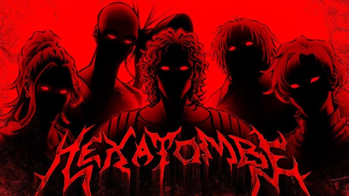

Graduando em Ciência da Computação...
Sou aluno em Ciência da Computação na FEI, e estudar tecnologia tem sido um prazer. Os desafios diários e as diferentes variáveis me mantém motivado a buscar novas descobertas. Há sempre algo novo para aprender, e eu adoro isso, mesmo que me frustre às vezes. O importante é seguir tentando.
">Um breve resumo sobre meus hobbies...
Talvez soe clichê, mas desde pequeno eu sempre fui apaixonado por jogos. Isso foi um pontapé inicial para outros hobbies: Desenhar, escrever, pensar em histórias e personagens em geral. Sempre me identifiquei como uma pessoa criativa e ainda acredito que seja. Espero que um dia eu posso criar o meu próprio jogo, mesmo que como projeto pessoal.
Ao lado, um dos primeiros personagens de videogame que conheci, Rayman. Os truques dele são muito irados, né?
Algumas coisas que gosto:
Ordem Paranormal - Hexatombe
Recentemente, (25/10), a nova temporada de Ordem Paranormal foi iniciada!
Infelizmente, não achei a abertura em boa qualidade pra colocar aqui.
Persona 5 Royal
Meio cringe, eu sei, mas eu curto pra caramba essa franquia de JRPGs.
Já zerei P3 e P5, e agora tô no quarto jogo, porém Persona 5 segue sendo o meu favorito.
Mr. Robot
Uma ótima série que estou assistindo no momento. Amo histórias com narradores não confiáveis.

"Sometimes I dream of Saving the world..."
Disco Elysium
Este jogo é INCRÍVEL extremamente profundo e belo. Preciso de mais tempo para zerar ele.

Lindo demais.
Bônus: ITZY
Há algum tempo atrás (menos de 6 meses), eu acompanhava todas as atividas desse grupo de K-Pop.
Talvez tenha sido só uma fase, talvez seja a falta de tempo... Mas eu acabei parado de acompanh=a-las. De qualquer forma, ainda gosto bastante das músicas e perfomances delas! ITZY
Eu gosto de muitos outros jogos, séries e também animes, porém não é viável citar todos eles aqui :/